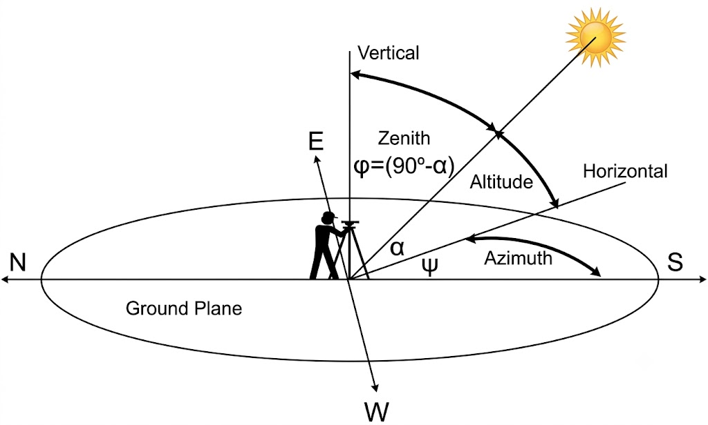

Understanding how solar radiation strikes the Earth is fundamental to meteorology and climatology. To solve Question 11 and complete your table, you need to calculate the Solar Elevation Angle (or simply, the Sun Angle) for various locations on specific dates.

Geometry of the solar elevation and zenith angles
This calculation relies on three straightforward steps mapping out the geometry of the Earth and Sun.
Step 1: Find the Subsolar Point
The subsolar point is the exact latitude where the sun's rays are striking the Earth perpendicularly (directly overhead) at solar noon. Earth's axial tilt restricts this point to oscillating between 23.5°N (Tropic of Cancer) and 23.5°S (Tropic of Capricorn).
December 22 (Winter Solstice): 23.5°S
March 22 / Sept 22 (Equinoxes): 0° (The Equator)
June 22 (Summer Solstice): 23.5°N
For any other day of the year, use the Interactive Analemma Explorer below to find the exact solar declination (subsolar point).
Subsolar Point
23.5° N
(Solar Declination)
Step 2: Calculate Latitude Separation
Next, determine the distance in degrees between the observer's latitude and the subsolar point you just found.
Same Hemisphere: Subtract the smaller latitude from the larger one.
Opposite Hemispheres: Add the two latitudes together.
Step 3: Calculate the Sun Angle
Because the zenith (directly overhead) is exactly 90° from the horizon, and we assume incoming solar rays travel in parallel lines, calculating the final angle is simple:
Sun Angle = 90° - Latitude Separation
📝 Walkthrough Examples
Example 1: Peru, NE (40.5°N) on December 22nd
Subsolar Point: 23.5°S (December Solstice)
Latitude Separation: Since Peru, NE is in the Northern Hemisphere and the subsolar point is in the Southern Hemisphere, we add them together. 40.5° + 23.5° = 64°.
Sun Angle: 90° - 64° = 26°(Note: The multiple-choice option in your lab table may round this to 26.5°, assuming a flat 40°N latitude for the exercise).
Example 2: Exeter, UK (51°N) on June 22nd
Subsolar Point: 23.5°N (June Solstice)
Latitude Separation: Both locations are in the Northern Hemisphere, so we subtract. 51° - 23.5° = 27.5°.
Sun Angle: 90° - 27.5° = 62.5°
🧮 Sun Angle Geometry Calculator
Use this interactive tool to visualize the geometry and verify your calculations for the rest of the table in Question 11.